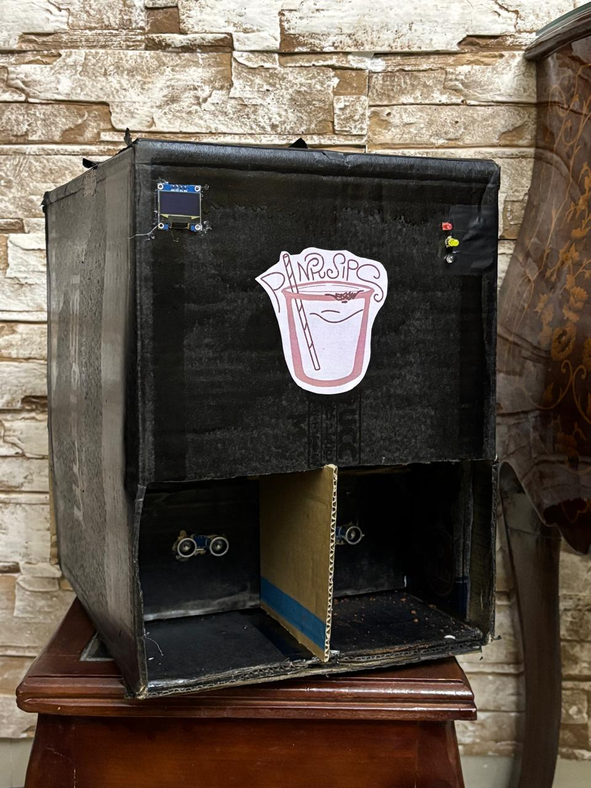
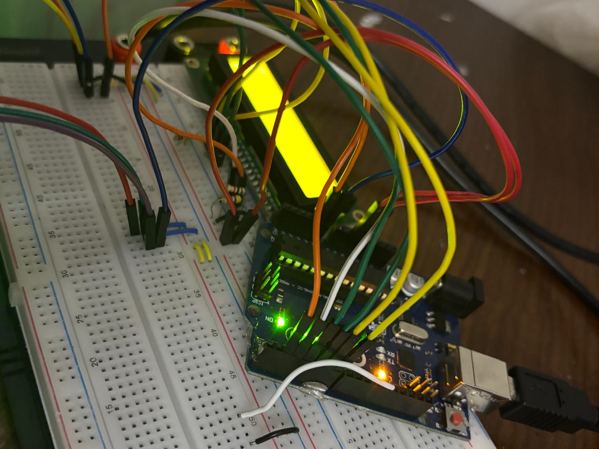

◄
1. Pink Sips:
- Pink Sips was a creative idea done by me and 4 of my friends. We didn't invent a new machine but we enhanced one.
- The idea was that we made a coffee machine where using sensors, you don't have to do anythin just place your cup.
- Once the sensor detects the cup, coffee granules fall into the cup and then the water starts pouring.
- We used simple components such as an Arduino (the brain), ultrasonic sensors, servo motors, and more tools.
- We worked so hard on it, and although we were exhausted, it was totally worth it!

2. Car Speed Detector:
- Yes, as you read a car speed detector. My colleagues and I worked together to make it.
- It was an easy yet effective project.
- We used Arduino, IR sensors, and a display screen. We used a toy car to test it and it worked perfectly.
- The 2 IR sensors measure time, and the distance between them was constant 5 cm.
- We moved the car in front of the sensors, calculating the time taken to move from one sensor to the other.
- Then we divided distance by time, and displayed the velocity on the screen.

⬿home